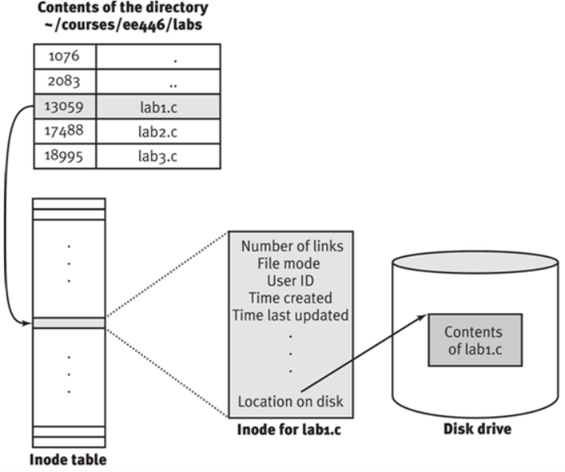

logrotate 在很多 Linux 发行版上都是默认安装的。系统会定时运行 logrotate，一般是每天一次。系统是这么实现按天执行的。crontab 会每天定时执行 /etc/cron.daily 目录下的脚本，而这个目录下有个文件叫 logrotate。在 centos 上脚本内容是这样的：
系统自带 cron task：/etc/cron.daily/logrotate，每天运行一次。
[root@gop-sg-192-168-56-103 logrotate.d]# cat /etc/cron.daily/logrotate
#!/bin/sh
/usr/sbin/logrotate -s /var/lib/logrotate/logrotate.status /etc/logrotate.conf
EXITVALUE=$?
if [ $EXITVALUE != 0 ]; then
/usr/bin/logger -t logrotate "ALERT exited abnormally with [$EXITVALUE]"
fi
exit 0
可以看到这个脚本主要做的事就是以 /etc/logrotate.conf 为配置文件执行了 logrotate。就是这样实现了每天执行一次 logrotate。
很多程序的会用到 logrotate 滚动日志，比如 nginx。它们安装后，会在 /etc/logrotate.d 这个目录下增加自己的 logrotate 的配置文件。logrotate 什么时候执行 /etc/logrotate.d 下的配置呢？看到 /etc/logrotate.conf 里这行，一切就不言而喻了。
include /etc/logrotate.d
logrotate 原理
ogrotate 是怎么做到滚动日志时不影响程序正常的日志输出呢？logrotate 提供了两种解决方案。
- create
- copytruncate
Linux 文件操作机制 介绍一下相关的 Linux 下的文件操作机制。
Linux 文件系统里文件和文件名的关系如下图  目录也是文件，文件里存着文件名和对应的 inode 编号。通过这个 inode 编号可以查到文件的元数据和文件内容。文件的元数据有引用计数、操作权限、拥有者 ID、创建时间、最后修改时间等等。文件件名并不在元数据里而是在目录文件中。因此文件改名、移动，都不会修改文件，而是修改目录文件。
create
这也就是默认的方案，可以通过 create 命令配置文件的权限和属组设置；这个方案的思路是重命名原日志文件，创建新的日志文件。详细步骤如下：
- 重命名正在输出日志文件，因为重命名只修改目录以及文件的名称，而进程操作文件使用的是 inode，所以并不影响原程序继续输出日志。
- 创建新的日志文件，文件名和原日志文件一样，注意，此时只是文件名称一样，而 inode 编号不同，原程序输出的日志还是往原日志文件输出。
- 最后通过某些方式通知程序，重新打开日志文件；由于重新打开日志文件会用到文件路径而非 inode 编号，所以打开的是新的日志文件。
如上也就是 logrotate 的默认操作方式，也就是 mv+create 执行完之后，通知应用重新在新文件写入即可。mv+create 成本都比较低，几乎是原子操作，如果应用支持重新打开日志文件，如 syslog, nginx, mysql 等，那么这是最好的方式。比如通过 kill 命令向程序发送一个 HUP 信号，使之重新加载
不过，有些程序并不支持这种方式，压根没有提供重新打开日志的接口；而如果重启应用程序，必然会降低可用性，为此引入了如下方式。
copytruncate
该方案是把正在输出的日志拷 (copy) 一份出来，再清空 (trucate) 原来的日志；详细步骤如下：
- 将当前正在输出的日志文件复制为目标文件，此时程序仍然将日志输出到原来文件中，此时，原文件名也没有变。
- 清空日志文件，原程序仍然还是输出到预案日志文件中，因为清空文件只把文件的内容删除了，而 inode 并没改变，后续日志的输出仍然写入该文件中。
如上所述，对于 copytruncate 也就是先复制一份文件，然后清空原有文件。 通常来说，清空操作比较快，但是如果日志文件太大，那么复制就会比较耗时，从而可能导致部分日志丢失。不过这种方式不需要应用程序的支持即可。
配置 logrotate
执行文件： /usr/sbin/logrotate
主配置文件: /etc/logrotate.conf
自定义配置文件: /etc/logrotate.d/*.conf
修改配置文件后，并不需要重启服务。 由于 logrotate 实际上只是一个可执行文件，不是以 daemon 运行。
运行 logrotate
logrotate [OPTION...] <configfile>
-d, --debug ：debug 模式，测试配置文件是否有错误。
-f, --force ：强制转储文件。
-m, --mail=command ：压缩日志后，发送日志到指定邮箱。
-s, --state=statefile ：使用指定的状态文件。
-v, --verbose ：显示转储过程
crontab 定时
通常惯用的做法是配合 crontab 来定时调用。默认是一天执行一次，可以自己添加 crontab 规则
crontab -e
*/30 * * * * /usr/sbin/logrotate /etc/logrotate.d/rsyslog > /dev/null 2>&1 &
手动运行
debug 模式：指定 [-d|–debug]
logrotate -d
verbose 模式： 指定 [-v|–verbose]
logrotate -v
logrotate 参数
详细介绍请自行 man logrotate
主要介绍下完成常用需求会用到的一些参数。
一个典型的配置文件如下：
[root@localhost ~]# vim /etc/logrotate.d/log_file
/var/log/log_file {
monthly
rotate 5
compress
delaycompress
missingok
notifempty
create 644 root root
postrotate
/usr/bin/killall -HUP rsyslogd
endscript
}
- monthly: 日志文件将按月轮循。其它可用值为 daily，weekly 或者 yearly。
- rotate 5: 一次将存储 5 个归档日志。对于第六个归档，时间最久的归档将被删除。
- compress: 在轮循任务完成后，已轮循的归档将使用 gzip 进行压缩。
- delaycompress: 总是与 compress 选项一起用，delaycompress 选项指示 logrotate 不要将最近的归档压缩，压缩 将在下一次轮循周期进行。这在你或任何软件仍然需要读取最新归档时很有用。
- missingok: 在日志轮循期间，任何错误将被忽略，例如 “文件无法找到” 之类的错误。
- notifempty: 如果日志文件为空，轮循不会进行。
- create 644 root root: 以指定的权限创建全新的日志文件，同时 logrotate 也会重命名原始日志文件。
- postrotate/endscript: 在所有其它指令完成后，postrotate 和 endscript 里面指定的命令将被执行。在这种情况下，rsyslogd 进程将立即再次读取其配置并继续运行。
上面的模板是通用的，而配置参数则根据你的需求进行调整，不是所有的参数都是必要的。
/var/log/log_file {
size=50M
rotate 5
dateext
create 644 root root
postrotate
/usr/bin/killall -HUP rsyslogd
endscript
}
在上面的配置文件中，我们只想要轮询一个日志文件，size=50M 指定日志文件大小可以增长到 50MB,不满50MB不会被分割 dateext 指示让旧日志文件以创建日期命名。
常见配置参数
- daily: 指定转储周期为每天
- weekly: 指定转储周期为每周
- monthly: 指定转储周期为每月
- rotate count: 指定日志文件删除之前转储的次数，0 指没有备份，5 指保留 5 个备份
- tabooext [+] list：让 logrotate 不转储指定扩展名的文件，缺省的扩展名是：.rpm-orig, .rpmsave, v, 和～
- missingok：在日志轮循期间，任何错误将被忽略，例如 “文件无法找到” 之类的错误。
- size size：当日志文件到达指定的大小时才转储，bytes (缺省) 及 KB (sizek) 或 MB (sizem)
- compress： 通过 gzip 压缩转储以后的日志
- nocompress： 不压缩
- copytruncate：用于还在打开中的日志文件，把当前日志备份并截断
- nocopytruncate： 备份日志文件但是不截断
- create mode owner group: 转储文件，使用指定的文件模式创建新的日志文件
- nocreate: 不建立新的日志文件
- delaycompress： 和 compress 一起使用时，转储的日志文件到下一次转储时才压缩
- nodelaycompress： 覆盖 delaycompress 选项，转储同时压缩。
- errors address: 专储时的错误信息发送到指定的 Email 地址
- ifempty: 即使是空文件也转储，这个是 logrotate 的缺省选项。
- notifempty: 如果是空文件的话，不转储
- mail address: 把转储的日志文件发送到指定的 E-mail 地址
- nomail: 转储时不发送日志文件
- olddir directory：储后的日志文件放入指定的目录，必须和当前日志文件在同一个文件系统
- noolddir： 转储后的日志文件和当前日志文件放在同一个目录下
- prerotate/endscript： 在转储以前需要执行的命令可以放入这个对，这两个关键字必须单独成行
nginx 日志轮换示例
/var/log/nginx/*.log /var/log/nginx/*/*.log{
daily
missingok
rotate 14
compress
delaycompress
notifempty
create 640 root adm
sharedscripts
postrotate
[ ! -f /var/run/nginx.pid ] || kill -USR1 `cat /var/run/nginx.pid`
endscript
}
关于 USR1 信号解释
USR1 亦通常被用来告知应用程序重载配置文件；例如，向 Apache HTTP 服务器发送一个 USR1 信号将导致以下步骤的发生：停止接受新的连接，等待当前连接停止，重新载入配置文件，重新打开日志文件，重启服务器，从而实现相对平滑的不关机的更改。
对于 USR1 和 2 都可以用户自定义的，在 POSIX 兼容的平台上，SIGUSR1 和 SIGUSR2 是发送给一个进程的信号，它表示了用户定义的情况。它们的符号常量在头文件 signal.h 中定义。在不同的平台上，信号的编号可能发生变化，因此需要使用符号名称。
kill -HUP pid killall -HUP pName 其中 pid 是进程标识，pName 是进程的名称。
如果想要更改配置而不需停止并重新启动服务，可以使用上面两个命令。在对配置文件作必要的更改后，发出该命令以动态更新服务配置。根据约定，当你发送一个挂起信号 (信号 1 或 HUP) 时，大多数服务器进程 (所有常用的进程) 都会进行复位操作并重新加载它们的配置文件。